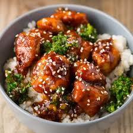

General Tso's Chicken

Description
General Tso's (pronounced tsow) chicken is a Chinese-American dish that features deep-fried chicken tossed in an
irresistibly sticky glaze made with garlic, sugar, soy sauce, and chiles. The dish is named after 19th-century
military leader Tso Tsung-t'ang.
Ingredients
-
For Chicken:
- 4 cups vegetable oil for frying
- 1 large egg
- 1 ½ pounds skinless, boneless chicken thighs, cut into 1 1/2-inch pieces
- 1 teaspoon salt
- 1 teaspoon white sugar
- 1 pinch white pepper
- 1 cup cornstarch
-
For Sauce:
- 2 tablespoons vegetable oil
- 3 tablespoons chopped green onion
- 1 clove garlic, minced
- 6 dried whole red chilies
- 1 strip orange zest
Steps
- Prepare sauce: Heat vegetable oil in a deep-fryer or large saucepan
to 375 degrees F (190 degrees C).
- Whisk egg in large mixing bowl. Add chicken, salt, sugar, and pepper; mix well. Mix in cornstarch, a little
bit at a time, until chicken is well coated.
- Working in batches, carefully drop one piece of chicken at a time into the hot oil. Fry until chicken turns
golden brown and begins to float, about 3 minutes. Remove chicken to a plate and allow to cool as you fry
the next batch.
- Once all of the chicken has been fried, refry the chicken, starting with the batch that was cooked first.
Fry each batch until chicken turns deep golden brown, about 2 minutes more. Drain on a paper towel-lined
plate.
- Prepare sauce: Heat vegetable oil in a wok or large skillet over high heat. Stir in green onion, garlic,
whole chiles, and orange zest. Cook and stir until garlic turns golden and chiles brighten, 1 to 2 minutes.
- Add sugar, soy sauce, chicken broth, peanut oil, rice vinegar, sesame oil, and ginger; bring to a boil and
cook for 3 minutes. Whisk 2 teaspoons of cornstarch in water until dissolved. Stir into the boiling sauce.
Return to a boil and cook until the sauce thickens and is no longer cloudy from the cornstarch, about 1
minute.
- Stir chicken into the boiling sauce. Reduce heat to low and cook until chicken is heated through and has
absorbed some of the sauce, about 3 minutes.